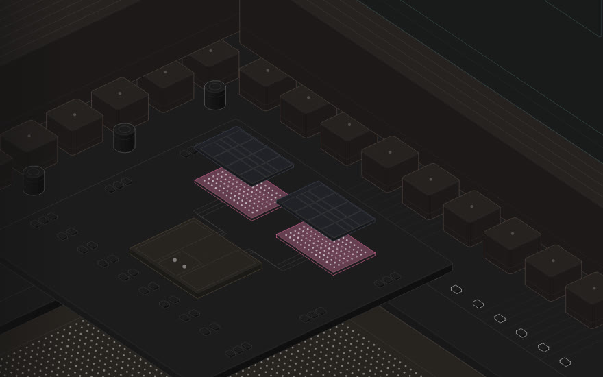

AMD · desktop · 2026
Ryzen 9 9950X3D2
Open an AM5 socket, lift the compute dies off the 64 MB cache stacked under each one, and see how much a bigger cache speeds up memory loads.
- 16 Zen 5 cores
- 208 MB cache
- 3D V-Cache × 2
- 16 slides